Projected plots for the JCP experiment plan · 17 October 2026
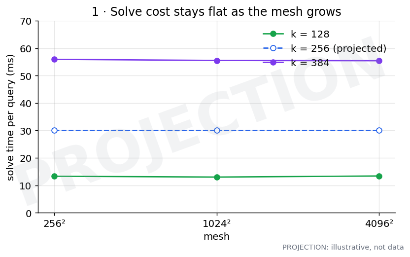
Expected: Flat lines: the same time at 256², 1024² and 4096² for each k. Bigger k sits higher. The k = 128 and k = 384 lines are measured; k = 256 is projected.
How we'd make it: Experiment 1c. Run the 2D model at k = 128, 256, 384 on all three meshes in one GPU job, timing the solve separately from start-up and output, with 6 cases × 3 repeats, side by side.
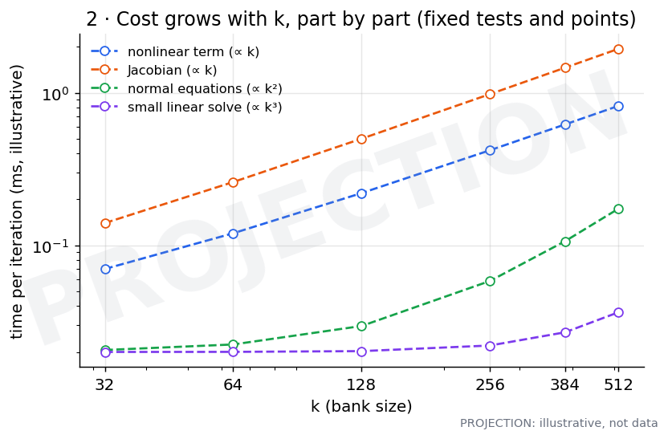
Expected: Straight lines on a log–log plot. The nonlinear term and the Jacobian grow about in proportion to k; the small linear solve grows fastest (about k³) but stays cheap until k is large. Shapes only: no measured values here.
How we'd make it: Experiment 1a. Time each solver part separately for k = 32–512 at 1024², with the number of tests and points held fixed, on 12 saved solution states. Fit a slope for each part and compare it with theory.
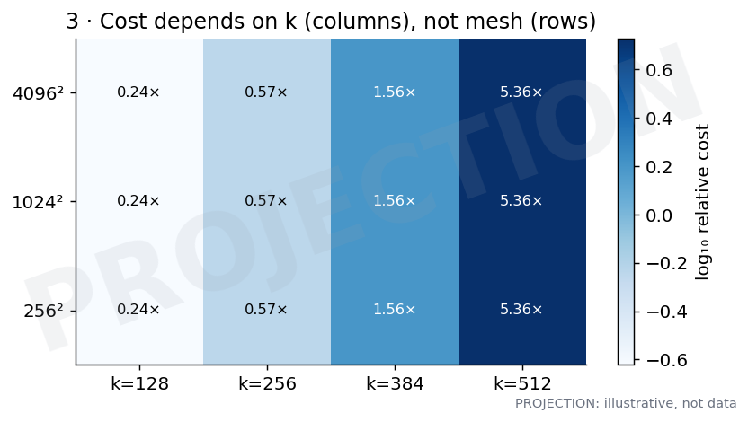
Expected: Each column has one colour: changing the mesh (rows) changes nothing, and changing k (columns) changes everything. The numbers are measured relative costs at 1024², repeated down the rows as the projection.
How we'd make it: Built from the same runs as plots 1 and 2: cost for every (k, mesh) pair.
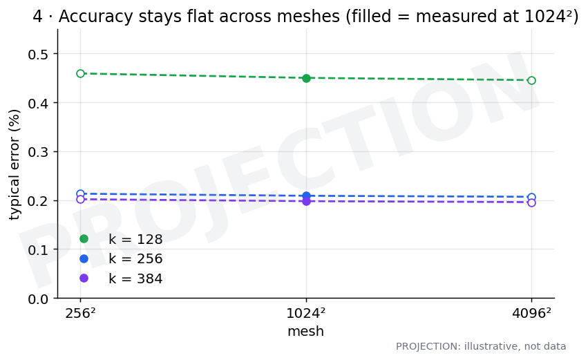
Expected: Flat lines for each k. Filled points are measured at 1024² against the trustworthy references (0.45 %, 0.21 %, 0.20 %); the hollow points at other meshes are projected.
How we'd make it: Experiment 1d. Run k = 128, 256, 384 at 256² and 4096² (1024² is reused), score against the order-verified references, and keep only settings that pass the soundness checks.
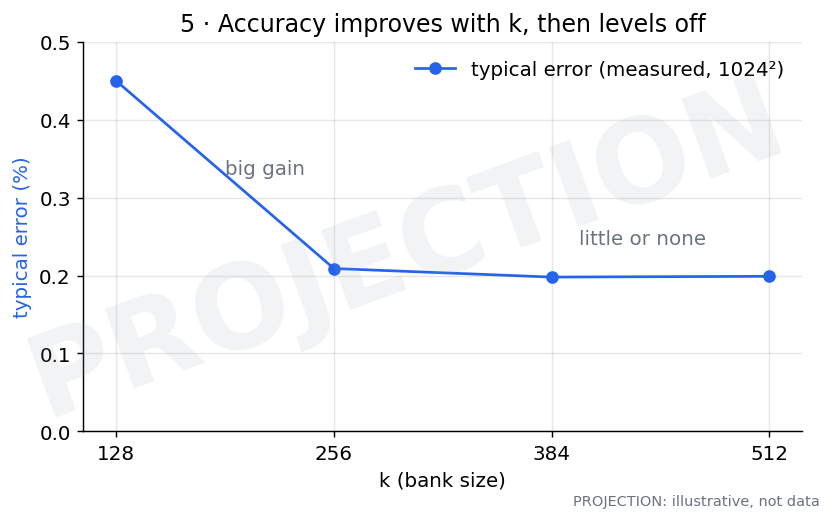
Expected: Measured at 1024²: a big gain from 128 to 256, then little or none. Step 1 repeats this at the other meshes.
How we'd make it: Experiment 1d, typical error against k at each mesh. Every step from one k to the next is reported, including the ones that don't improve.
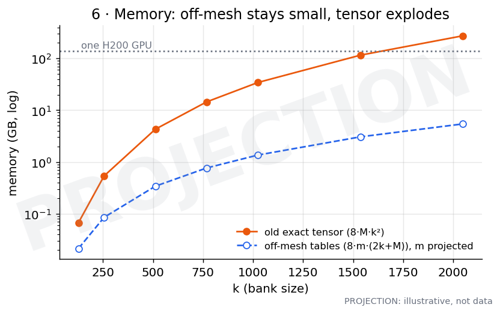
Expected: The old exact tensor passes a whole GPU at about k = 1,600. The off-mesh tables stay a few GB. This is arithmetic from the storage formulas; the number of points per k is assumed.
How we'd make it: Experiment 1g. Measure peak GPU memory in every Step 1 job, and plot it next to the formulas.
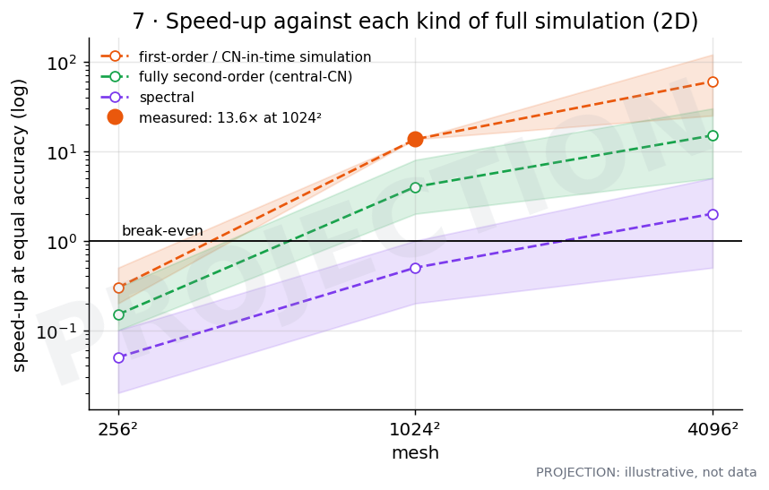
Expected: Big filled dot: measured 13.6× at 1024² against a simulation that is second order in time. Shaded bands are projections. We lose on small meshes and win on big ones against standard simulations. Against spectral the band straddles break-even: that's the main risk.
How we'd make it: Experiment 2c. For each simulation type, sweep time step × tolerance × simulation mesh. Pick the cheapest setting at least as accurate as ours, chosen on practice cases, then time both side by side on the same GPU.
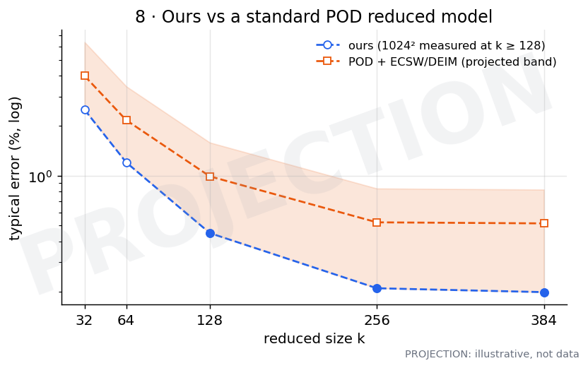
Expected: Projected: POD needs a bigger size for the same error on Burgers. The shaded band is wide because nothing is built yet; it could also land on our line.
How we'd make it: Experiment 2b. Build POD with ECSW and Q-DEIM at the same and smaller sizes, tune each for equal effort on practice cases, and compare error and time on the same cases.
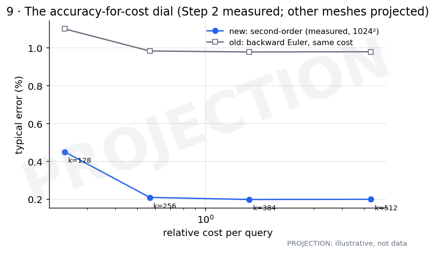
Expected: Measured at 1024²: the new second-order model (blue) sits far below the old backward-Euler model (grey) at the same cost, for every k. Step 2 repeats this at all meshes, with only settings that pass the soundness checks.
How we'd make it: Experiment 2d. Error against cost for each k and time step, after the soundness checks (2a).
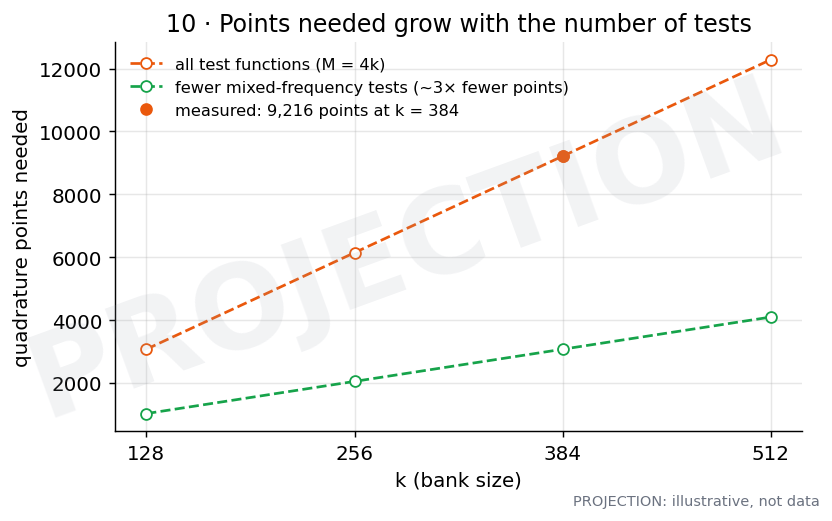
Expected: Points needed rise roughly in proportion to k (because tests = 4k). Using fewer mixed-frequency tests could cut points about 3×: an earlier run needed about 3× fewer points with only the first 320 tests.
How we'd make it: Experiments 3a/3b. For each k and test count, find the smallest number of points that passes the accuracy bar. Repeat with a reduced test set.
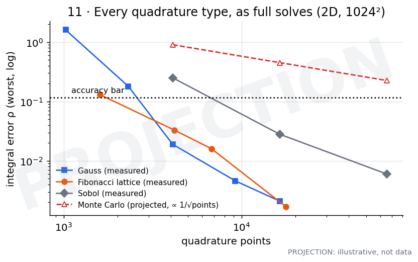
Expected: Gauss, Fibonacci and Sobol lines are measured integral errors (2D, 1024²). Monte Carlo is projected: it falls slowest, as 1/√points. Step 3 turns these into full solves and adds Halton and Monte Carlo.
How we'd make it: Experiment 3c. Run each rule type at increasing point counts as a full solve; Smolyak is kept as a must-fail check.
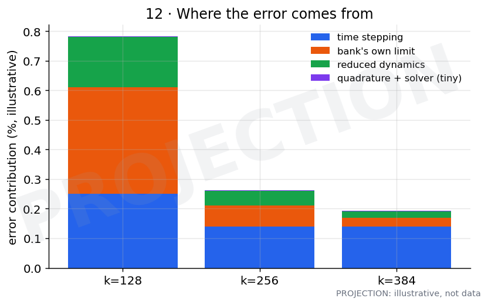
Expected: Illustrative, shaped after Step 2's error budget: time stepping is the biggest part; the bank's own limit matters most at small k; quadrature and solver errors are tiny.
How we'd make it: Experiment 3e. Switch one ingredient at a time to its 'perfect' version (finer rule, smaller time step, tighter solver, more tests) and measure how much the error drops.
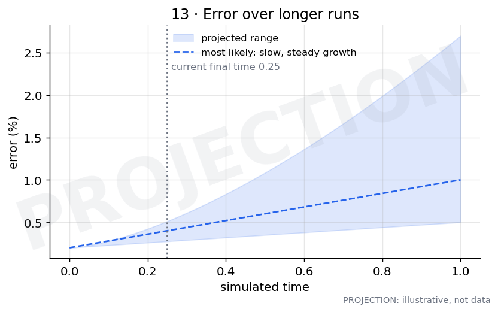
Expected: The least known. Most likely slow, steady growth past today's final time of 0.25; the shaded range shows it could grow faster.
How we'd make it: Experiment 3f. Extend runs past 0.25. This needs new reference solutions for the longer times.
Plots generated by reports/2026-10-17-full-experiment-plan/projections/make_projections.py. Measured anchors come from the 2D quadrature-study report (solve times, integral errors) and the combined (Step 2) report (errors, costs, the 13.6× speed-up).